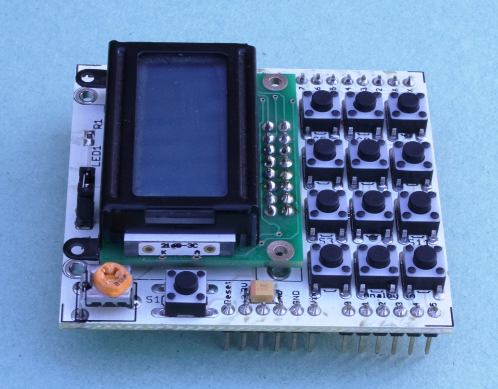
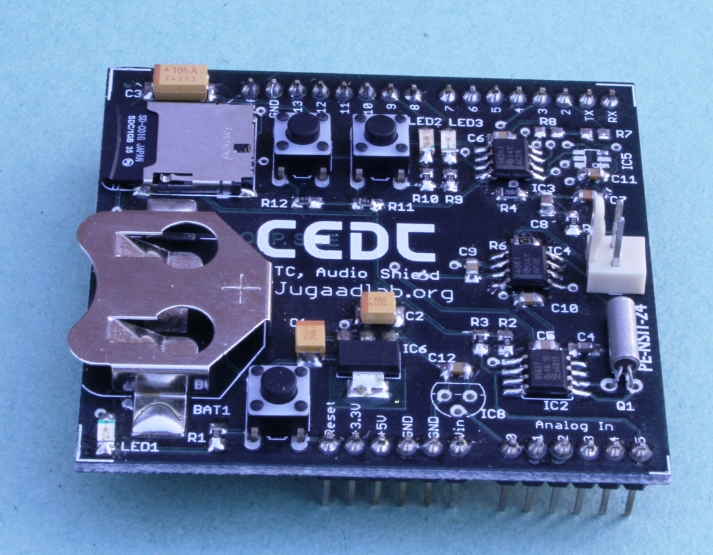
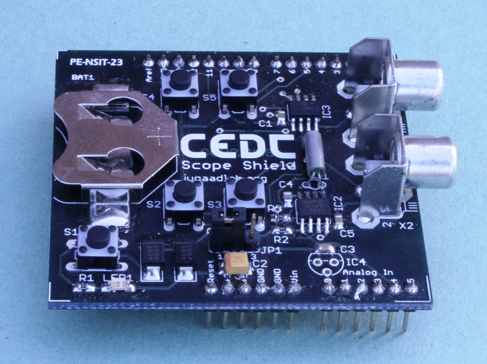

Stellaris Guru: ARM Microcontroller Evaluation Kit
Project done at Centre for Electronics Design and Technology, New Delhi
Project funded by Texas Instruments (India) Ltd.
Related Publication Project Source Code
- Based on LM3S608 microcontroller family from the TI Stellaris 600 series family.
-
- User programmable push buttons and ultra-bright LEDs, both unicolor and RGB. Reset pushbutton and power indicator LED.
-
- A LM35 temperature sensor for taking temperature readings using the Analog to Digital Convertor.
-
- Thumbwheel Potentiometer for reading analog voltage through one of the ADC channels of the microcontroller.
-
- Microphone amplifier with high gain and sensitivity connected to an independent ADC channel of the microcontroller.
-
- Ambient light sensor using a LED operated in reverse bias.
-
- Standard ARM 20-pin JTAG debug connector.
-
- Arduino compatible interface connector.
-
- UART0 accessible through a USB virtual COM port (VCP). Programmable through UART using preinstalled boot loader.
-
- USB interface for all communication and power.
Various Shields Developed for the Stellaris Guru

Display Shield, with a 8x2 display and 12 buttons
Audio Shield
Scope Shield for connecting to an oscilloscope and making games
Shanjit Singh Jajmann | Dhananjay V. Gadre | Rohit Dureja | June 22th, 2012